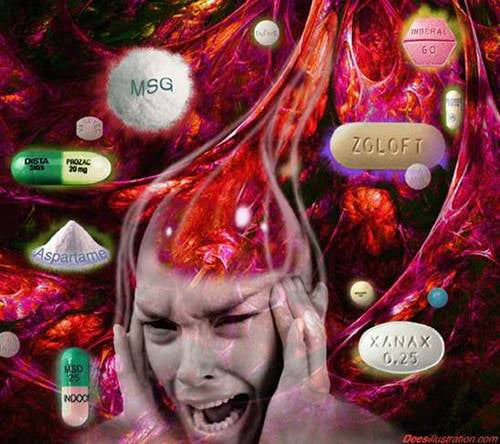
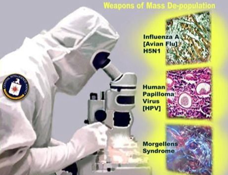

Preporuka za ovaj jedinstveni uređaj za zaštitu od tehničkih i drugih zračenja.
(Uređaj preporučuje i Spasoje Vlajić)

Zdrvalje je po zvaničnoj medicini stanje psihičkog,fizičkog i socijalnog blagostanja.Znači svi su bolesni jer ovo je fikcija.I iz toga treba da proizađe rešenje da ste svi za lečenje.Šta je psihičko zdravlje je malo relativna stvar u svetu novog svetskog poretka ,npr. u Japanu ako radite manje od 16 sati,i koristite godišnje odmore niste normalni.U zapadnom svetu 90% ljudi koristi lekove za smirenje,čak na jednom Menhetnu u Njujorku taj procenat je 95% a usput se verovatno još i drogiraju.Eto tamo većina ima puno para,kažu da mogu sve da kupe ali ipak su bolesni poprilično.Očigledno da vam novac za psihičko zdravlje nije toliko neophodan. Kod nekih fizičkih retkih bolesti koje se posebno plaćaju i leče samo negde u svetu tu vam treba i novac ali očigledno da recimo ti ljudi koji imaju puno para da se izleče i od fizičkih bolesti su i dalje bolesni.Pa onda obično se bave i sportom,jer znate kako kažu “u zdravom telu zdrav duh”,ali opet ništa i dalje su bolesni.Znači da nešto nije dobro postavljeno.Postavlja se pitanje odakle idu bolesti? Ovo je inače jako široka tema,ali probaću da skratim.Inače ona teza “u zdravom telu zdrav duh”,je opet klasična zamena teza jer prava je “u zdavom duhu je zdravo telo”.Znači džabe je da trenirate nešto do besvesti, tako se ne leči duh.A za profesinalni sport i da ne pričam,možete biti samo još bolesniji.Nekada davno ljudi su i na zemlji živeli preko hiljadu godina bez ikakvih bolesti,ali da sada ne ulazim u sve događaje zašto i kako su odlučili da prestanu da žive onako kako su do tada živeli(recimo da je bilo pod uticajem demonskih sila delovanje na razne načine),došlo je do pada u svesnosti.Postepeno se skraćivao vek tih ljudi,živeli su sve kraće i kraće,i na kraju su došli do ovog današnjeg proseka od 70ak godina.Ali još uvek su bili zdravi.Nakon toga je usledio još jedan pad u svesti i tada su počele bolesti.Znači bolesti su stanje niskog nivoa svesti.Teško ćete videti prosvetljenu osobu (koja ima za jednu stepenicu viši nivo svesti) bolesnu od bilo čega.Tesla praktično nikada nije bio bolestan.Znači mi se sada nalazimo u periodu kada počinje obrnuti proces,tj.podizanje nivoa svesti i samo onaj prvi korak,jedna lestvica gore i bolesti neće više biti.Ali da bi to zavladalo na globalnom nivou potrebno je da do toga stigne veliki broj ljudi kako bi se preko novoformirane matrice to odrazilo i na sve ostale,odnosno olakšalo im put u tom pravcu.Jedni će u ovom periodu biti sve bolesniji i umirati a drugi idu u prosvetljenje i zdravlje.Pošto se vreme sve više ubrzava ovo će se sve brže dešavati.U našoj staroj 3d matrici pravilo je bilo da morate povremeno biti bolesni između ostaloga jer se tako ubrzava evolucija,rešavanje karme i drugih razloga o čemu sam govorio već na prethodnim stranama.

Na bolesti i zdravlje svakako utiče i karma i karmički dugovi ali o tome čitajte u rubrici karma.Ali ovo važi samo do momenta prosvetljenja,posle toga nema više karme.E sada mnogi padaju u razne zamke novog svetskg poretka i to kako će im oni dati lekove za neku bolest iako zvanično ne postoji lek ni za jednu bolest koji može da vas trajno izleči osim hiruškog noža.Noževi i te stvari su dozvoljeni u novom svetskom poretku čak i poželjni.Postoje samo simptomatski lekovi zvanično,mada nezvanično sam čuo kada im se neki važan naučnik na tajnim projektima razboli od raka ili bilo čega,obično ga izleče već istog dana.Važniji im je on nego neka bolest u tom slučaju.U današnje vreme postoje i razna pomodarstva,to naročito žene vole da zaluđuju.Idu na ono kvarcovanje,ugrađuju veštačke delove,silikone,šminkanje,lakiranje i razne kreme i td.Uglavnom sve je to kancerogeno i mnogo opasno na razne načine.Muškarce opet zaluđuju da treba da rade sve više i više,onda kažu ekonomska je kriza pa moraćete i više poslova da radite pogotovo još ako ste uzeli đavolski kredit.Vi mislite da je njima cilj da im vratite kredit? NE,njima je cilj da im budete večno dužni.To je tzv. Dužničko ropstvo koje važi kako za pojedince tako i za države.Kada im neka država i vrati sve dugove,odmah predsednika proglese za diktatora i rat počinje ili ga ubiju.U delu karma čitajte više o ovome.Sada ću samo reći da oni neće da im vratite dug nego da to platite svojom životnom energijom i na kraju glavom.E sada tu su još i dodatno negativni uticaji na zdravlje kao što su hrana,aditivi,i pesticidi u njoj(čitajte na stranici o hrani),zatrovan vazduh,zemlja,priroda,voda,stanovi sa svim mogućim stvarima u njima(ne zna se šta je opasnije da li onaj sintetički tepih ,tv,lakovan parket,farbani zidovi,opasni lepkovi,tip gradnje koji crpi energiju i još milion toga),i na kraju vam utiču i na misli(čitajte u rubrici filmovi i muzika).Pa nije ni čudo onda što ste sve bolesniji.Ali ove bolesti ne treba brkati sa promenama koje se dešavaju na zemlji i koje svako može da oseti(mada i to može da pređe u bolest ako se ne zna šta da se radi).Onda kada se razbolite imate “lekove” koji vam malo poprave stanje te bolesti ali postajete zavisnik od njih(čak i od raznih krema),postepeno se trujete tim lekovima,jer ipak su to otrovi koji kada se dugo uzimaju izazivaju čitav spektar novih ili čak istih bolesti od kojih se kao "lečite".I tako ulazite sve dublje u začarani krug iz koga na prvi pogled nema izlaza.Međutim izlaz uvek postoji,čak je i veliki brat svestan da mora da ostavi izbor jednom broju ljudi koji to odaberu.Kako prevazići sve ovo ne može da se objasni ovako jednostavno ali nadam se da ste bar nešto ukapirali.Koga interesuju detalji neka uzme pa proučava,imam o svemu.
Što se tiče sporta to je posebna priča koju sam namerno uvrstio ovde jer mnogi smatraju da je to zdravlje i jako dobra stvar.Za onu zamenu teza oko sporta sam vam već objasnio da ne ponavljam.Uglavnom mnogi roditelji upisuju decu od malih nogu na razne sportove misleći da je to nešto jako zdravo i dobro.Ako je neki bezazleni sport tipa stoni tenis još i nije problem,pogotovo ako je više rekreativnog tipa.Svako ko se bavi sportom treba da ga uskladi sa svojim godinama i da ne preteruje,i da to bude isključivo rekreativno,a bilo bi idealno i da se ne računaju poeni jer tu dolazi do uvežbavanja ega što je u današnjim vremenima posebno opasno,a posebno u sportovima jedan na jedan.Opet neki roditelji daju decu na sport ne bi li postigli velike uspehe ili da ne bi otišli u drogu i alkohol.Međutim u profesionalnom sportu doping je obavezan,a opasan je bar koliko i droga,drugo rezultati se nameštaju,a da uspeju mogu samo “odabrani”.Ovo oko sporta ne bih dalje dužio jer o tome je jako dobro sve objasnio naš nekadašnji profesionalni sportista Duci Simonović,i to onako iz svih aspekata.Tako da vam ja savetujem da što se sporta tiče te emisije ispod odgledate i to bi oko toga bilo dovoljno.Ima samo jedna stvar pozitivna da tako kažem ako pratite sportska takmičenja.Primetićete da iako smo relativno mala država sa malo stanovnika,bili smo prvaci sveta praktično u svakom sportu u kome smo to hteli da budemo,a to ni Kinezi nisu uspeli sa preko milijardu stanovnika,s tim da oni idu više na kvantitet što nije isto.Isto bismo postigli i da nas ima samo 100.000.Kako je to moguće,sigurno se mnogi pitaju.Moguće je jer kao što rekoh izvorna bela rasa smo i uz to kontrolori planete,pa kada se samo malo probudi onaj izvorni kod postajemo "vanzemaljci" za ostale i potpuno nepobedivi za bilo koga.Tako bismo mogli da radimo i postignemo bilo šta,samo da se odlučimo šta nam je cilj.

Oni što idu po sportskim kladionicama,šta reći tuga i žalost.Prvo kao što sam rekao sve se namešta,a te kladionice su posebna bolest.Razmislite malo šta vam je cilj tamo.Ako hoćete da od 50 evra napravite 5000 taj film nećete gledati,nego ćete sve da izgubite.Onaj ko misli da se obagati sa sitnim ulozima nema nikakve šanse,bolje loto da igra ali kažu da su šanse na veliki dobitak manje nego da vas grom udari.Lepo kaže stara izreka “porez na budale”.A opet ako hoćete da krenete sa velikim ulozima znači da već imate puno para,pa što ste onda i dolazili.Ja shvatam da je to bolesna navika ali ne shvatam kako ne preračunate malo postavke svih tih kladionica pa da vidite da su šanse na dobitak zanemarljive.Ja od sporta stigoh do kladionice,ali sam se sada setio da samo u mom kvartu ima bar 30ak kockarnica i niču nove kao pečurke posle kiše.Sada sam odlučio da vam do kraja objasnim ovo oko kockanja jer vidim da je veliki problem,posebno kao bolest zavisnosti od kocke,a što je najgore mnogi tamo idu sa poslednjim parama ne bi li za početak vratili ulog a onda će i da se obogati ali u snovima.
U kockarnicama dobijaju uglavnom samo vlasnici kockarnica.Glavni dobitak nikada nećete dobiti ukoliko vam nije sudbina da dobijete,a to znači da mora da postoji dogovor o tome na višem nivou još od pre vašeg rođenja.Ostale manje dobitke možete ponekad da dobijete ali se nećete obogatiti,nego ćete uvek dugoročno biti u sve većem gubitku.Onaj kome je suđeno da dobije dovoljno je 1-2 puta godišnje da odigra i dobiće ako mu je vezano za određenu godinu života(a uglavnom je vezano).Ali ne možete igrati bilo šta,treba da pronađete igru sa jedinstvenim brojem,nekada su postojali lozovi(ja mislim da ih sada nema, nisam u toku),poenta je da ima jedinstveni broj koji imate samo vi i niko više.Ne vredi da igrate loto ako će još mnogo njih da stavi iste brojeve,onda nećete dobiti.Jeste li primetili da dobitnici glavnih nagrada na lotou su uglavnom 1. ili najviše 2. osobe.Tokom proučavanja svih ovih mojih materijala naišao sam i na tu oblast oko kockanja pa sam video neke zanimljive stvari samo me taj deo nije posebno interesovao.Ali reći ću vam da postoje određene zakonitosti ili formule koje se usklađuju sa nekim kosmičkim pravilima i to vam povećava šanse na dobitak ali samo one manje dobitke.Onu glavnu nagradu kao što sam rekao ne možete dobiti ako vam nije suđeno.Moj jedan rođak tako ,nekada davno išao je na sajam i ulaznica je bila i nagradni tiket sa jedinstvenim brojem.On nije ni znao da učestvuje u igri i dobio je glavnu nagradu Automobil,koja su u to vreme koštala koliko danas kuća.Mislim da je veliki brat doskočio i ovome i da tih lozova više nema,proverite ako vas to zanima.U tajnim organizacijama su ispitivane i ovakve stvari,rađeni su eksperimenti i šta su ustanovili.Recimo po tim pravilima o kojima sam pričao popune listić lotoa za recimo 7 dobitaka,i pogode svih 7.I tako svaki put za redom,ali nisu uplatili listić.Znači formula radi,međutim kada su uplatili prvi put pogodili su samo 5 brojeva.Uglavnom svi dobici su se vrteli oko 4 ili 5,osim kada su davali nekim ljudima za koje su nekako doznali da im je suđeno da dobiju i desilo se da su odmah dobili bar 6 pogodaka a na kraju i glavnu premiju.Nadam se da će ovo pomoći nekome da shvati da samo kome je suđeno može da dobije,a drugo u današnjim vremenima to i nije zdravo po život jer imate karmička umrežavanja sa svim ljudima koji su uplatili to što ste vi dobili,što može biti dosta opasno osim ako nemate neke jako plemenite ciljeve.Još moram da kažem da je na internetu sve više sajtova koji navlače ljude da idu da se kockaju a za to oni dobijaju proviziju od tih kockarnica koje reklamiraju.Sajtovi su tipa da ta osoba koja je vlasnik sajta sada živi negde na Havajima okružen palmama i bazenima jer eto on je "otkrio" kako može na određenim kockarskim sajtovima da se sigurno dobija i to stalno,i tako da se on toliko obogatio da sada besplatno deli savete.Čuvajte se ovakvih tragi komičnih sajtova i priča a ima ih bezbroj.
Ovde možete napraviti manju ili veću kupovinu onoga što je na stranici knjige ,kontakt i porudžbine objašnjeno.Znači moguće su 2 vrste porudžbine :
1.Manja kupovina se tretira više kao donacija ali za uzvrat ipak dobijate jednu vrlo zanimljivu knjigu u pdf-u o Nikoli Tesli koja će vas oduševiti,spada u raritete i malo se zna o ovome.Vrlo poučna stvar.
2.Veća kupovina podrazumeva kompletan detaljan materijal o ovim temema sa sajta koji je objašnjen na stranici knjige ,kontakt i porudžbine i ima oko 50gb i nakon poručivanja možete preuzeti preko linka ili za one u Srbiji može i pouzećem.Za one koji plaćaju preko linka ispod, izaberite opciju 60 evra.To se podrazumeva da je ova porudžbina.Oni koji hoće pouzećem neka me kontaktiraju.
Prilikom procedure kupovine uloliko ste za manju kupovinu ili donaciju možete izabrati jedan od već ponuđenih iznosa ili jednostavno u polje gde piše iznos vi upišite svoj iznos po želji,a za veću porudžbinu kao što rekoh birate 60 evra opciju.Nakon završenog plaćanja bićete kontaktirani preko emaila u roku 24 časa i dobićete ili link za preuzimanje ako je veća porudžbina ili knjigu na email ako je manja.
Preporuka za ovaj jedinstveni uređaj za zaštitu od tehničkih i drugih zračenja.
(Uređaj preporučuje i Spasoje Vlajić)